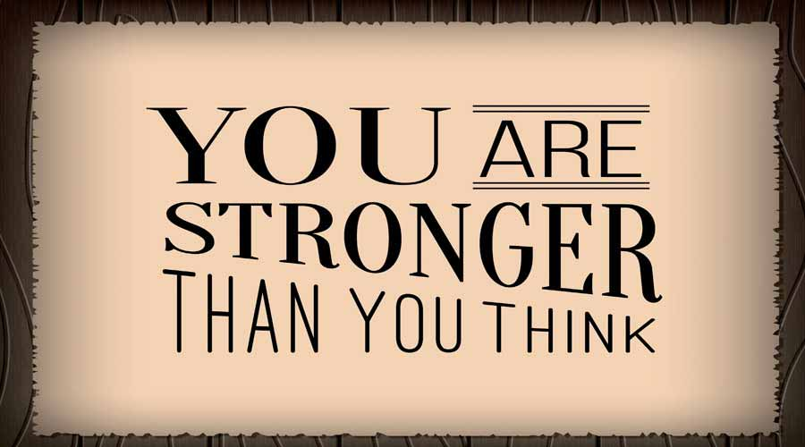
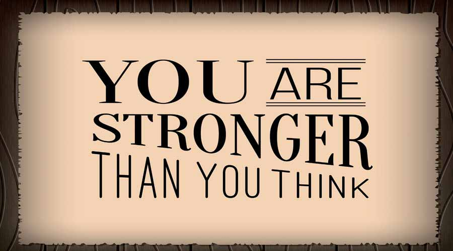
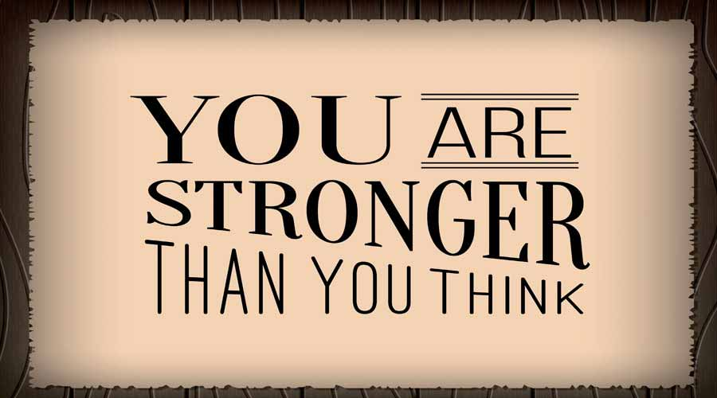
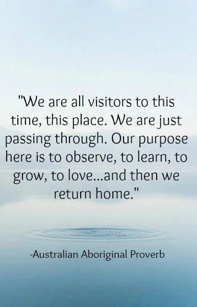
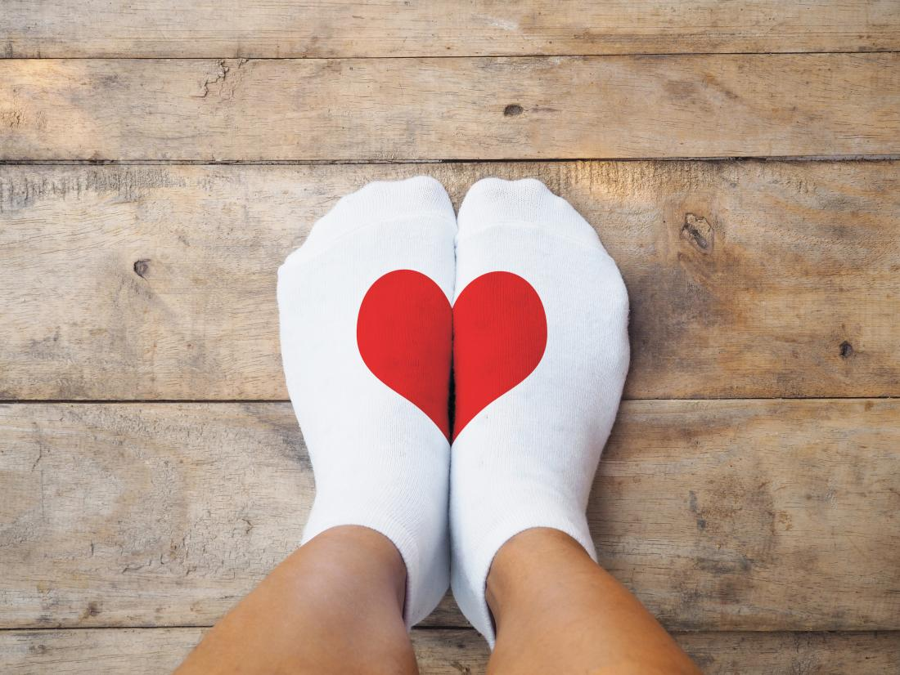

Welcome to Royals life talks,where we talk about anything and everything.
 

Life is not easy but with a good attitude,inner confidence and guidance,you can be the best version of you.
Welcome to Royals life talks,where we talk about anything and everything.

Life is not easy but with a good attitude,inner confidence and guidance,you can be the best version of you.
Life’s wisdom can often miss us because life moves so fast, that we have to practice standing still. In many cultures and religions across the world, gaining wisdom is the ultimate goal. Wisdom is seen as the highest form of understanding, which can lead you towards enlightenment. Something I’ve learned in life is that my favorite quotes and sayings can often become principles to live by. It is always okay to seek advice and to consult about anything. Keep in mind that whatever you are going through,someone else has,is or will go through later on, you aren't the first and neither will you be the last so encourage yourself in any way you can and you'll not only be an example to others but you'll also have an easier time dealing with more life challanges.
I hope these documents and sayings about life can serve as guidelines for greater happiness, fulfillment, connection, and meaning.>
The society wants us to live by the examples of others,right. They want us to live the life they all concider normal and succesfull, they want us to meet their expectations to the latter.Graduate at campus by 22, get married by 24,be making great income by 30 with a beautiful family. Then what do they think of you if you don't fulfill that?The most common thing is that; you have failed in life.Why?because you did not live up totheirexpectations or you did not live like the majority.
Most of us end up loosing confidence in ouselves and give up when we are yet too young. But here's the thing,you don't have to live up to anyone's expectations, you are solemnly in control of your own life.Only you can decide the path to take in life. It's okay to be different,it's okay to be unique and it's even better npot to be trapped in the system. Remember in that different way you live your life is what defines how special you are. stick to your own timeline.
Did you know that knowing people is not really having friends? A lot of people out here brag about how famous they are and how they have a million followers on their social media accounts not keeping in mind that theirs such a big difference between having Acquaintances and having friends.
Research shows that 90% of the people who feel lonely and go through many cases of depression are the ones we concider famous.This is mostly because we all look at them like superheroes and for that reason they find it hard to express their true feelings to anyone so as to not ruin their reputation or image.
The video below will help you understand more about this topic.
Self love generally means regard for one's own well being and hapiness.This is a very important part of human growth. Think about the fact that in the current world,finding someone to love you the way you deserve is not as easy as it sounds and even if you do find that person,they'll probably come later on in life,so you only have you to love you for the time being.
As many psychology studies attest, self-love and -compassion are key for mental health and well-being, keeping depression and anxiety at bay.
Below, we take a look at some of the things that you can do to nurture this core feeling.
Most of us in the Western world have been raised to believe that perfectionism is a great quality to have. After all, being obsessed with perfect details leads to perfect work, and this personality trait gives us the opportunity to humblebrag during job interviews. In reality, however, perfectionism is bad for you. Not just "not ideal" or "harmful when excessive," but actively bad. Like cigarettes or obesity. A shorter lifespan, irritable bowel syndrome, fibromyalgia, eating disorders, depression, and suicidal tendencies are only a few of the adverse health effects that have been linked with perfectionism. Recovering from heart disease or cancer is also harder for perfectionists, with this trait making survivors — as well as the general population — more prone to anxiety and depression.
So what can we do to move away from perfectionism? First off, acknowledge that it's bad for you; beating yourself up over every little error gradually chips away at your sense of self-worth and makes you less happy. And you deserve better than this. In the words of Kristin Neff — a professor of human development at the University of Texas at Austin — "Love, connection, and acceptance are your birthright. In other words, happiness is something that you're entitled to, not something that you need to earn. Even the United Nations adopted a resolution recognizing that the "pursuit of happiness is a fundamental human goal." Also, you should try to resist the temptation to beat yourself up for beating yourself up. Paul Hewitt — a clinical psychologist in Vancouver, Canada, and author of the book Perfectionism: A Relational Approach to Conceptualization, Assessment, and Treatment — likens the inner critic harbored by perfectionists to "a nasty adult beating the crap out of a tiny child." When you've spent years cultivating this inner bully, you develop an unconscious reflex to put yourself down for every minor thing, no matter how ridiculous or absurd. from missing a deadline to dropping a teaspoon on the floor, perfectionists will constantly give themselves a hard time over the most unexpected things — so criticizing yourself for criticizing yourself is not uncommon.
Self-compassion and self-love are largely used interchangeably in specialized literature. Research shows that having more self-compassion builds resilience in the face of adversity, helping people to recover more quickly from trauma or romantic separation. It also helps us to better cope with failure or embarrassment. But what is it, exactly? Drawing on the work of Prof. Neff, Sbarra and colleagues define self-compassion as a construct that encompasses three components: "self-kindness (i.e., treating oneself with understanding and forgiveness), recognition of one's place in shared humanity (i.e., acknowledgment that people are not perfect and that personal experiences are part of the larger human experience), and mindfulness (i.e., emotional equanimity and avoidance of overidentification with painful emotions)." "Self-kindness entails being warm and understanding toward ourselves when we suffer, fail, or feel inadequate, rather than flagellating ourselves with self-criticism."
Listening to yourself is paying attention to how you internally talk to yourself. It is crucial for learning to cultivate an intimate feeling of self-love. we are much harsher to ourselves than we would be to others, or than how we would expect others to treat us. So,to replace this harsh inner voice with a kinder one, you can simply notice it — which is already a step towards quietly subduing it — and actively try to soften it. Finally, you can try to rephrase the observations that you may have initially formulated quite harshly in the words of a kinder, more forgiving person. Or, you could try writing a letter to yourself from the perspective of the kind, compassionate friend that you have been to others, or from the perspective of a compassionate friend. A second reason why listening to yourself is important is that, during times of emotional distress, asking yourself the question "What do I need?" — and listening mindfully to the answer — can prove invaluable.
Self-love is a journey. It takes dedication, devotion, and practice. Resolve to love yourself each and every day and watch your best self blossom and your greatest life unfold! Self-love is an exponential force.
For any enquries,contact me through: